Penalties & Stewards
Every stewards' decision, infringement, fine and penalty from the FIA event documents.
| Doc | Driver | Session | Matter | Ruling |
|---|---|---|---|---|
| Doc 17 | Valtteri Bottas #77 Cadillac Formula 1 Team | Free Practice 1 | The following Power Unit elements have been used: | Penalty Drop of 50 grid positions for the next Race in which the driver participates.View FIA decision — 1 pageOriginal FIA PDF. Retrieved 2026-10-31T11:29:25+00:00 (not the issue date). 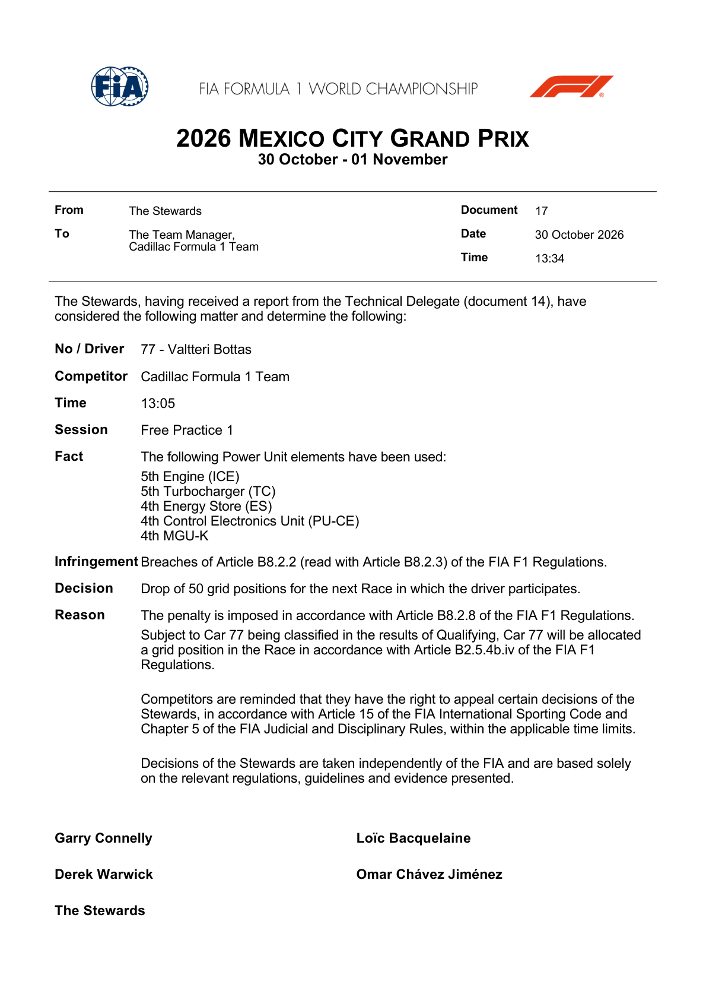 |
| Doc 20 | Nico Hulkenberg; Oliver Bearman; Kimi Antonelli; Nikola Tsolov; Colton Herta; Isack Hadjar; Arvid Lindblad; Leonardo Fornaroli; Oscar Piastri; Carlos Sainz; Jak Crawford; Ryo Hirakawa; Freddie Slater; Gabriele Mini; Luke Browning | Free Practice 1 | The F1 Cars below did not use the track at turns 1, 2, 4, 6, 11, 12 and 14. | Note Deletion of the lap times shown in accordance with Article 12.4.1.e of the FIA InternationalView FIA decision — 2 pagesOriginal FIA PDF. Retrieved 2026-10-31T11:29:25+00:00 (not the issue date). 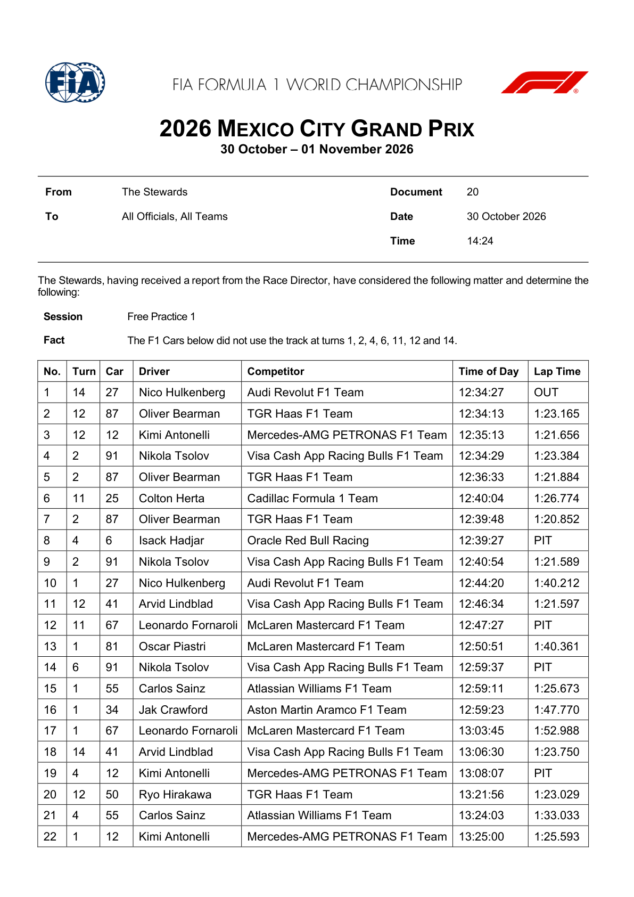 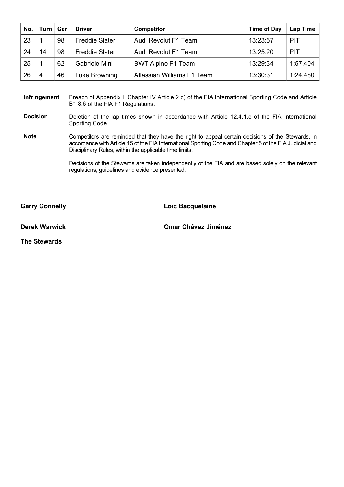 |
| Doc 21 | Gabriele Mini; Oliver Bearman; Ryo Hirakawa; Lewis Hamilton | Free Practice 1 | The F1 Cars passed through a double waved yellow flag marshalling sector. | Note Deletion of the lap times shown in accordance with Article 12.4.1.e of the FIA InternationalView FIA decision — 1 pageOriginal FIA PDF. Retrieved 2026-10-31T11:29:25+00:00 (not the issue date). 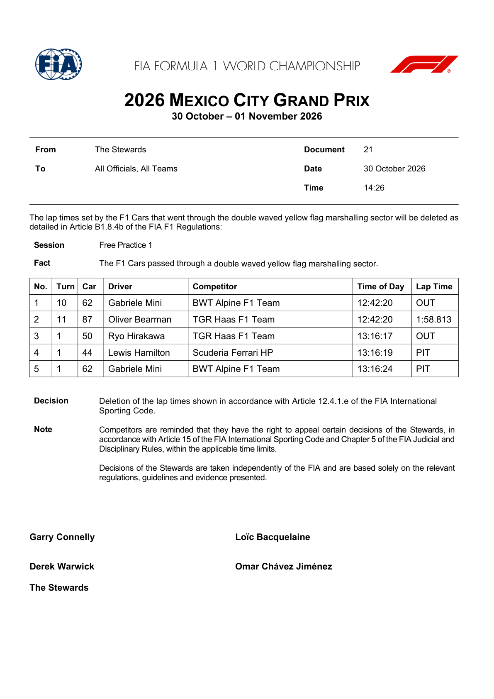 |
| Doc 22 | Freddie Slater #98 Audi Revolut F1 Team | Free Practice 1 | Car 98 was released with a cooling fan still attached to the intake of the right radiator. | Fine The competitor (Audi Revolut F1 Team) is fined €7,500.View FIA decision — 1 pageOriginal FIA PDF. Retrieved 2026-10-31T11:29:25+00:00 (not the issue date). 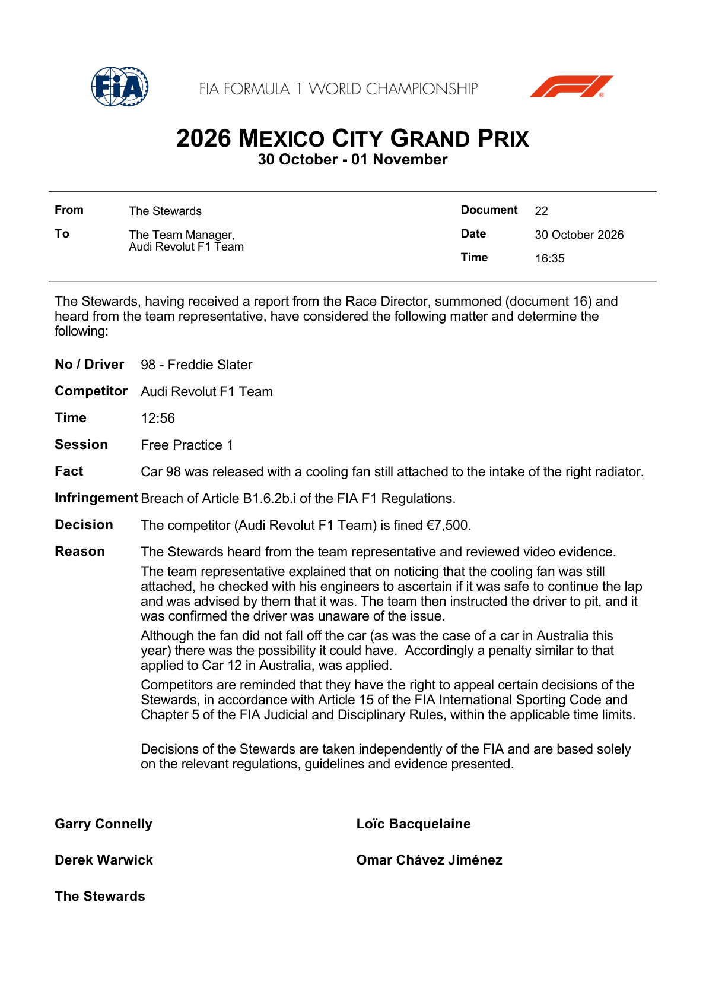 |
| Doc 27 | Oliver Bearman; Valtteri Bottas; Pierre Gasly; Oscar Piastri; Lando Norris; Isack Hadjar; Max Verstappen; Charles Leclerc; Franco Colapinto; Carlos Sainz; Nico Hulkenberg; Alexander Albon | Free Practice 2 | The F1 Cars below did not use the track at turns 1, 3, 4, 5, 12 and 14. | Note Deletion of the lap times shown in accordance with Article 12.4.1.e of the FIA InternationalView FIA decision — 2 pagesOriginal FIA PDF. Retrieved 2026-10-31T11:29:25+00:00 (not the issue date). 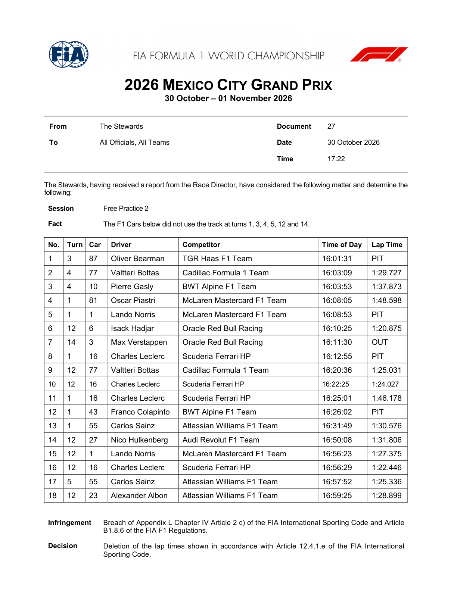 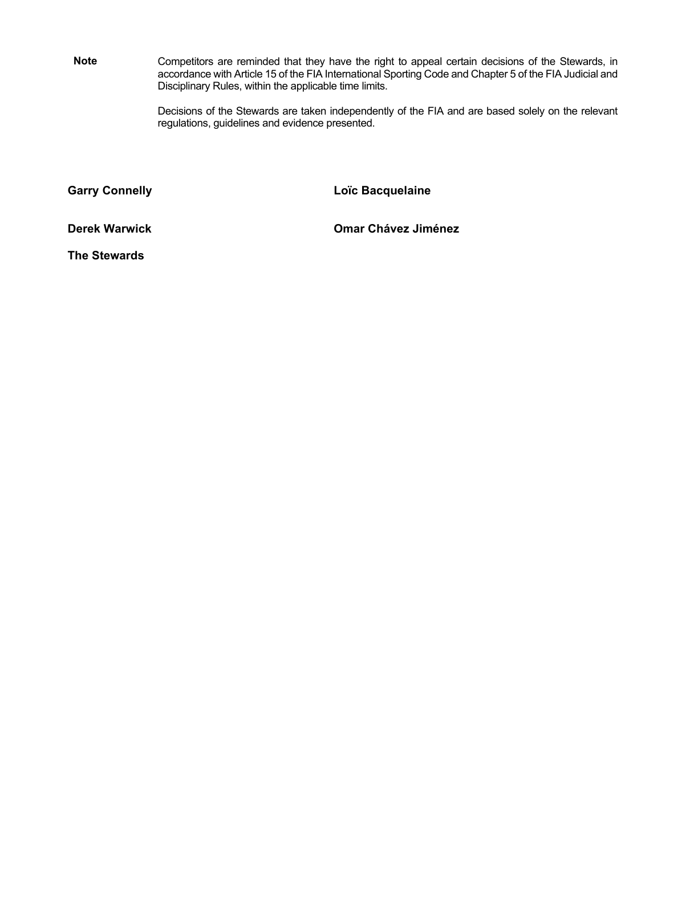 |
| Doc 32 | Gabriel Bortoleto #5 Audi Revolut F1 Team | Free Practice 2 | The floor of Car 5 was transported by team personnel from one side of the garage to | Fine The competitor (Audi Revolut F1 Team) is fined €5,000.View FIA decision — 2 pagesOriginal FIA PDF. Retrieved 2026-10-31T11:29:25+00:00 (not the issue date). 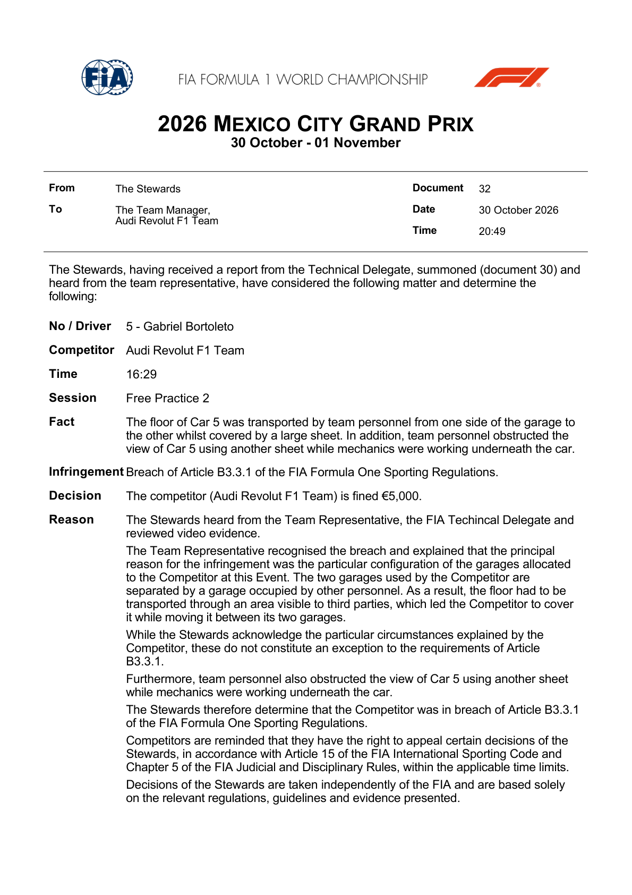 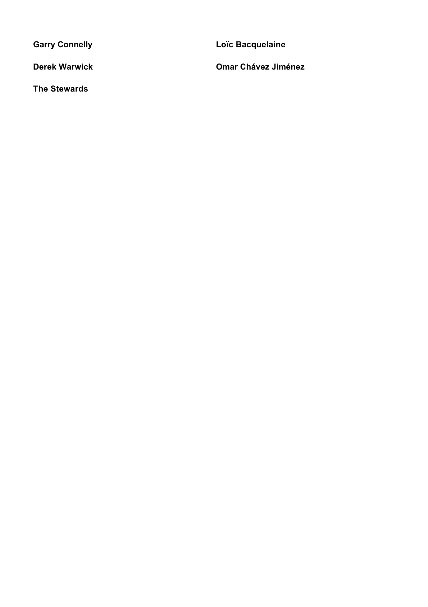 |
| Doc 33 | Max Verstappen #3 Oracle Red Bull Racing | Free Practice 2 | Cars 3 and 30 engaged in a series of moves on the entry to turn 12 through to the | Penalty A drop of one grid position for the next race in which the driver competes.View FIA decision — 2 pagesOriginal FIA PDF. Retrieved 2026-10-31T11:29:25+00:00 (not the issue date). 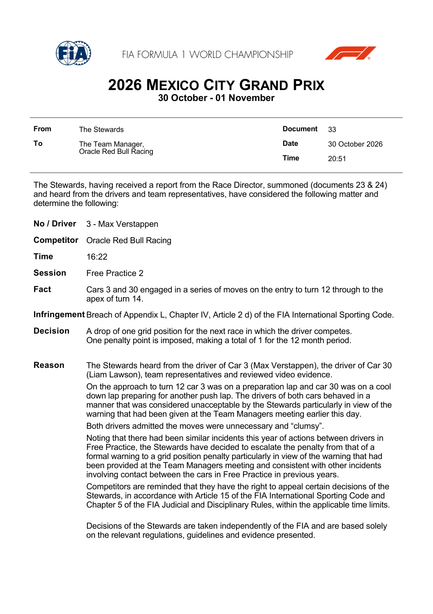 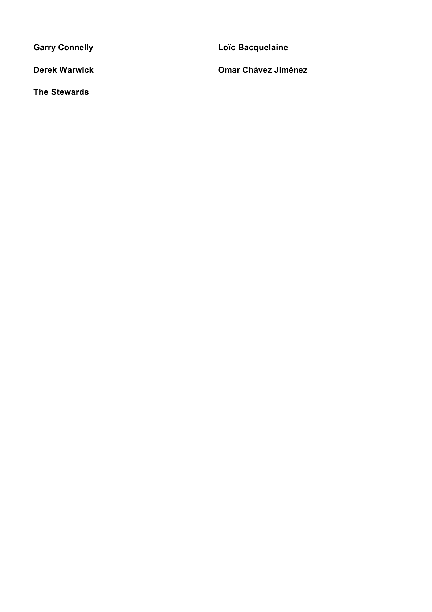 |
| Doc 34 | Liam Lawson #30 Visa Cash App Racing Bulls F1 Team | Free Practice 2 | Cars 3 and 30 engaged in a series of moves on the entry to turn 12 through to the | Penalty A drop of one grid position for the next race in which the driver competes.View FIA decision — 2 pagesOriginal FIA PDF. Retrieved 2026-10-31T11:29:25+00:00 (not the issue date). 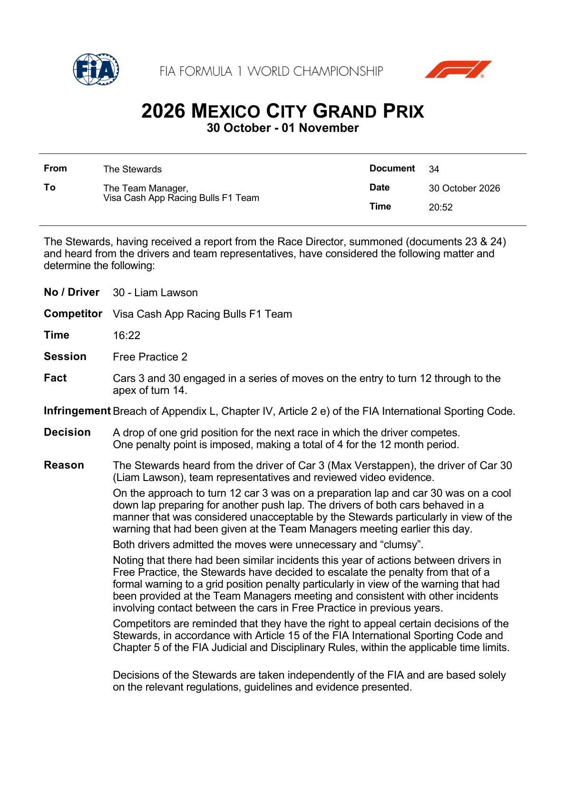 |
Source: FIA — Mexico City Grand Prix documents (stewards' decisions).